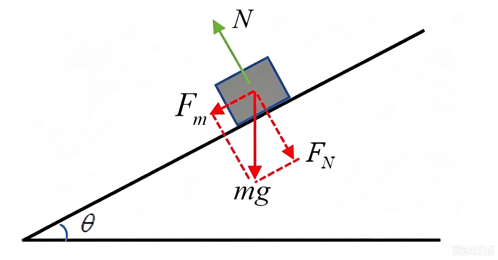
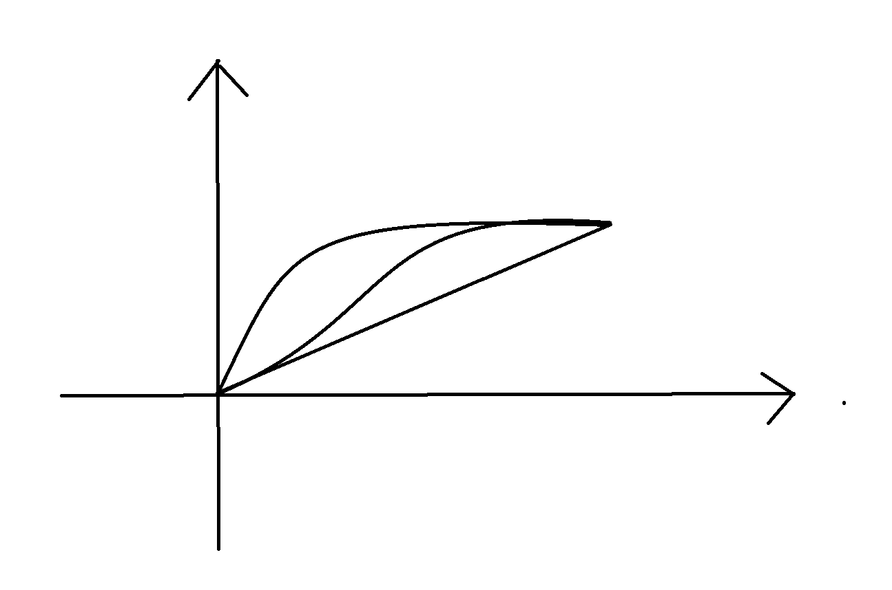
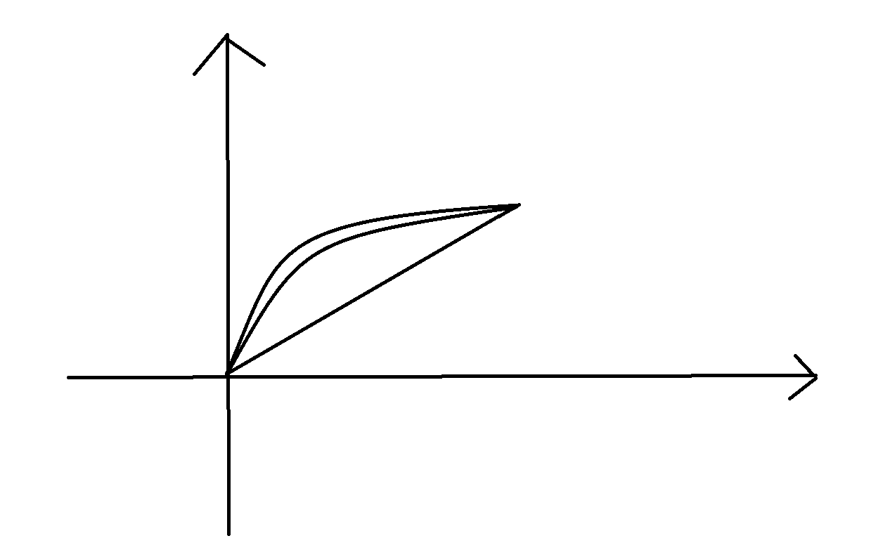
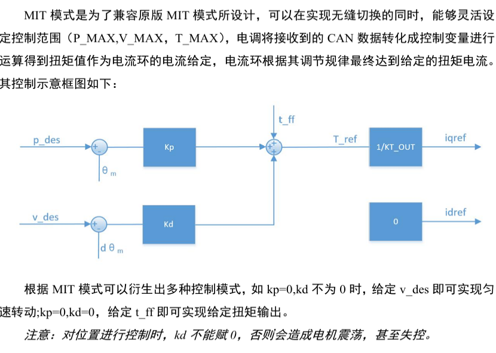
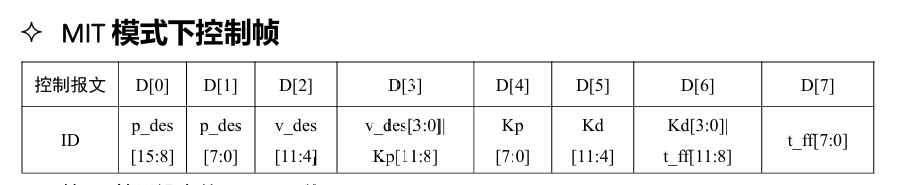
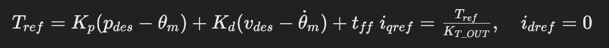
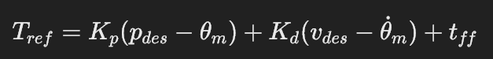

一、认识稳态误差
想象一个场景：一块木块放在一个光滑倾斜的斜坡上，控制目标是把它精准推到斜坡上某一个固定位置并保持不动。木块自身受重力分力，会一直沿斜坡向下滑，相当于系统持续存在外部负载扰动。

只用 P 控制（无 Ki）
只用比例环节：
输出推力 = Kp × (目标位置 - 实际位置)- 木块离目标越远，输出推力越大；靠近目标，误差变小，推力随之变小。
- 当木块快要到达目标点时，位置误差不断缩小，P 输出的推力也不断变小。
- 关键点： 斜坡向下的重力是恒定负载，想要对抗它必须输出一个固定推力。但比例控制的推力来源于位置误差——如果木块完全到达目标，err = 0，P 输出推力变成 0，木块就会往下滑。
最终系统会停在一个有位置偏差的平衡点。
即使加上微分 D，D 项只对运动、速度变化起作用，只抑制震荡，不能消除稳态误差。D 靠误差的变化率输出，当系统静止不动时误差变化率为 0，D 输出等于 0。
PD 控制器无法消除恒定负载带来的稳态位置偏差。
引入积分项 Ki 消除稳态误差
积分环节的输出：把历史上所有的误差持续累积，只要存在位置误差，积分就会不停累积。
- 只要木块还没到目标，误差一直存在，积分就持续叠加推力，去对抗斜坡重力；
- 只有当实际位置完全等于目标位置，ERR = 0，积分停止累加；此时积分保存住之前累积的输出推力，用来抵消斜坡的恒定重力负载，维持木块静止在目标点。
但是 Ki 的工作机理是依靠误差一点点累积输出：
只有误差持续存在，积分才会慢慢把补偿量"攒出来"。这个特性带来一个显著弊端——收敛速度慢，需要多个控制周期慢慢累积，无法瞬间生成补偿力矩，同时还会带来相位滞后。
如果我们可以不单纯等待误差慢慢产生、再依靠积分慢慢累加补偿，而是根据系统当前的工况，直接给出一个控制提前量，就可以大幅缩短甚至省去 Ki 消除稳态误差的累积时间。这就是前馈控制的核心思想。
前馈不依靠闭环的位置误差来生成输出。回到斜坡木块的例子：斜坡重力是确定的扰动，我们不需要等木块发生位置偏移之后再让积分慢慢攒推力；我们可以直接根据斜坡角度，预先算出对抗重力所需的推力，直接叠加到控制器输出上。


二、从 DM-4310 控制与前馈
MIT 模式的控制结构由三部分并行叠加：位置比例支路、速度微分支路、扭矩前馈支路，输出合成总扭矩参考 T_ref，再经过扭矩→电流换算得到 d/q 轴电流给定。


1. 位置闭环支路
输入为目标位置 p_des，与电机实际位置 θ_m 做差得到位置误差，经比例系数 Kp 放大，输出位置环对应的扭矩分量。
2. 速度闭环支路
输入为目标速度 v_des，与电机实际速度 dθ_m 求差得到速度误差，经微分系数 Kd 放大，输出速度环对应的阻尼扭矩分量。
3. 扭矩前馈支路
直接输入前馈扭矩 t_ff，不经过误差闭环运算，直接叠加到总扭矩输出，作为前馈补偿项。
位置支路输出、速度支路输出、前馈扭矩三者相加，得到最终扭矩参考 T_ref；再除以电机扭矩系数 KT_OUT，转换为 q 轴电流给定 iqref；d 轴电流给定 idref 设为 0，实现表贴式永磁电机的零 d 轴电流控制。


DM-4310 的 MIT 模式为 PD + t_ff 架构，驱动器内部没有积分环节。
- PD 闭环负责抑制跟踪偏差、抑制震荡；
t_ff扭矩前馈用来补偿已知扰动（重力、摩擦力），消除稳态误差，避免引入积分带来的相位滞后、震荡风险。
但前馈控制有一个硬性前提：你必须提前知道需要补偿的力矩多大。
单独的前馈属于开环补偿，它不根据实际位置偏差做修正。如果补偿力矩和真实扰动存在偏差，就会残留一部分稳态误差，无法完全消除。
实际工程中，重力、摩擦力这类扰动参数往往无法直接通过理论计算精确获得。零件装配公差、摩擦随温度变化、机构磨损等因素，都会造成理论模型与真实工况之间存在误差，仅凭手工整定 t_ff 很难得到理想的补偿力矩。
为了解决前馈力矩获取的问题，可以采用参数辨识的方法：通过实验采集系统运行数据，拟合出机构的扰动模型，计算出适配的前馈补偿力矩。在达妙 DM-4310 电机的实际应用中，常采用最小二乘法完成模型参数辨识，求解重力项与摩擦项对应的补偿力矩，得到更准确的 t_ff。
三、最小二乘法参数拟合原理
对于一个线性模型，假设输出与各个输入量满足如下关系：
y = a0 + a1·x1 + a2·x2式中：
y为系统输出；x1、x2为模型输入变量；a0、a1、a2为待求模型参数，未知参数的数量称为该模型的自由度，本式中自由度为 3。
实验中可以多次测量，获取多组观测样本，每一组样本可以写出一个方程：
- 若样本数量恰好等于自由度（此处 3 组样本），方程组为适定方程组，可以直接解出唯一一组
a0, a1, a2。 - 实际测量存在噪声、测量误差，一般会采集远多于自由度的样本，此时方程数量大于未知数数量，构成超定方程组。
对于超定方程组，不存在一组参数可以严格满足全部方程。最小二乘法的核心思想是：不去追求每个方程完全成立，而是让所有样本的误差平方之和最小。
损失函数 J = Σ (误差)²J 代表全部样本的误差平方和，通过最小化 J，求解得到最优的一组参数估计值。写成矩阵形式后，最小二乘有解析解，可以直接计算得到最优参数。得到参数后代入原模型，即可对输出进行计算与预测。